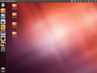
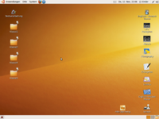

Computer nach dem Neustart zurücksetzen
Dieser Artikel wurde für die folgenden Ubuntu-Versionen getestet:
Dieser Artikel ist größtenteils für alle Ubuntu-Versionen gültig.
Zum Verständnis dieses Artikels sind folgende Seiten hilfreich:
 In diesem Artikel soll erläutert werden, wie ein Computer mit Ubuntu bei jedem Start immer wieder das gleiche Aussehen erhält. Diese Anleitung eignet sich z.B. für Schulcomputer oder andere Übungsräume. Schüler verändern oft und gerne das Erscheinungsbild des Computers. Beispiele sind das Verschieben oder Löschen der Programmstarter auf dem Desktop, der Leisten (Panels), das Ändern des Hintergrundbilds und vieles andere mehr.
In diesem Artikel soll erläutert werden, wie ein Computer mit Ubuntu bei jedem Start immer wieder das gleiche Aussehen erhält. Diese Anleitung eignet sich z.B. für Schulcomputer oder andere Übungsräume. Schüler verändern oft und gerne das Erscheinungsbild des Computers. Beispiele sind das Verschieben oder Löschen der Programmstarter auf dem Desktop, der Leisten (Panels), das Ändern des Hintergrundbilds und vieles andere mehr.
Das ist an sich nicht tragisch, aber leider fehlt oft die Zeit, das Wissen oder die Lust, diese persönlichen Einstellungen wieder rückgängig zu machen. Der oft geäußerte Satz "Verlasse Deinen Platz so, wie Du ihn vorgefunden hast." bleibt damit reines Wunschdenken und nach kurzer Zeit ist man als Lehrer mehr damit beschäftigt, das Chaos auf den PCs zu reparieren als sich dem eigentlichen Unterricht widmen zu können. Im schlimmsten Fall resigniert das Lehrpersonal und nutzt den Raum – zu Lasten der Schüler – einfach nicht mehr.
Während es unter anderen Betriebssystemen entsprechende, aber nicht kostenlose Soft- oder Hardwarelösungen ("Wächterkarten") gibt, basiert das nachfolgend beschriebene Vergehen einfach darauf, dass beim Systemstart automatisch sämtliche Benutzereinstellungen aus einer vordefinierten Sicherungskopie wiederhergestellt werden.
Eine Alternative kann das Programm Ofris  sein, das ein ähnliches Verfahren (auf Basis von rsync) verwendet. Weitere Informationen dazu gibt es in diesem Blogeintrag: Virtuelle Wächterkarte für Linux
sein, das ein ähnliches Verfahren (auf Basis von rsync) verwendet. Weitere Informationen dazu gibt es in diesem Blogeintrag: Virtuelle Wächterkarte für Linux  .
.
Experten-Info:
Ab Ubuntu 11.10 kann man auch die Gastsitzung des Displaymanagers LightDM verwenden, bei der alle Änderungen beim Abmelden automatisch verworfen werden. Diese kann auf Wunsch vorkonfiguriert werden, um bestimmte Einstellungen vorzugeben.
Ausgangssituation¶
Im folgenden Beispiel wird von einem Computer ausgegangen, auf dem bei der Installation nur ein Benutzer eingerichtet wurde. Dieser Benutzer hat unter Ubuntu traditionell alle Rechte [1], um den Computer zu warten, zu pflegen, Programme zu installieren, Grafik und Bildschirmauflösung einzustellen und das Erscheinungsbild anzupassen.
Dieser Benutzer wird im weiteren Verlauf des Artikels als "Hauptbenutzer" bezeichnet. Er erstellt die Grundkonfiguration des Rechners und richtet weitere Benutzer ein. Hierzu werden mit einem Linksklick  im Menü
im Menü
"System -> Systemverwaltung -> Benutzer und Gruppen"
zwei neue Benutzer angelegt und auch ein Passwort vergeben. In weiteren Verlauf dieses Artikels sind das die Benutzer
kinder (dient später als "normaler" Benutzer)
default (zur Sicherung bzw. Rücksicherung der Einstellungen)
Die Rechte der neuen Benutzer werden an dieser Stelle noch nicht einschränkt, sondern erst nach der kompletten Einrichtung des Systems. Jetzt abmelden und als neuer Benutzer kinder anmelden.
Benutzer einrichten¶
Nach der Anmeldung erfolgt die Einrichtung des Benutzers kinder. Folgende Punkte wären z.B. interessant:
|  |
| Desktop mit Unity |
Starter für ausgewählte Programme auf dem Desktop anlegen und an die gewünschte Stelle verschieben
Dateiablage einrichten (Ordner auf dem Desktop anlegen, siehe unten)
Browserkonfiguration (siehe Artikel Kinder)
Lautstärke einstellen bzw. auf stumm schalten
Schriftarten und gewünschte Zusatzprogramme installieren
nicht benötigte Programme aus den Menüs entfernen
Update-Benachrichtigung abschalten usw.
Wenn alles soweit fertig eingerichtet ist, sollte das System neu gestartet werden. Wenn nach dem Neustart immer noch alles so ist, wie es sein sollte, wird diese Einstellung beibehalten. Spätere Änderungen sind ohne weiteres – durch den Hauptbenutzer – möglich.
Ordner anlegen¶
|  |
| Desktop mit GNOME 2 |
Ein Speichern von Dateien auf dem Desktop oder unter Dokumente soll nicht möglich sein. Dateien werden immer – hier als Basisordner bezeichnet – unterhalb von /Dateien abgelegt. Dann sind die Dateien in diesem Ordner auch nach dem Neustart noch vorhanden.
Im Folgenden sind das beispielsweise die Ordner:
Klasse 1
Klasse 2
Klasse 3
Klasse 4
Diese sollen auf dem Desktop zu sehen sein und nur in diesen Ordnern dürfen die Schüler Dateien abspeichern. Alle genannten Ordner werden mit Schreib- und Leserechten versehen. So können Dateien problemlos abgespeichert werden, wobei die Schüler allerdings selbst den richtigen Ordner auswählen müssen.
Achtung!
Die späteren Benutzer sollten deutlich darauf hingewiesen werden, dass sämtliche Dateien, die außerhalb der vorgegebenen Ordner gespeichert werden, bei einem Neustart gelöscht werden und damit unwiderruflich verloren sind. Nicht betroffen sind externe Speichermedien wie beispielsweise USB-Sticks.
Um den beschriebenen Vorschlag umzusetzen, wieder als Hauptbenutzer anmelden und ein Terminal-Fenster [2] öffnen. Es werden in zwei Schritten der oben erwähnte Basisordner und die Verknüpfungen auf dem Desktop des Benutzers kinder eingerichtet. Dazu die folgenden Befehle ausführen:
sudo mkdir -p /dateien/klasse1 /dateien/klasse2 /dateien/klasse3 /dateien/klasse4 sudo chown -R kinder:kinder /dateien
cd /home/kinder/Desktop/ sudo -s ln -s /dateien/klasse1 Klasse1 ln -s /dateien/klasse2 Klasse2 ln -s /dateien/klasse3 Klasse3 ln -s /dateien/klasse4 Klasse4 exit
Jetzt kann das Terminal-Fenster wieder geschlossen werden. Nach der Anmeldung als Benutzer kinder haben die Ordner auf dem Desktop ein kleines Pfeilsymbol als Zeichen für eine Verknüpfung.
Experten-Info:
Je nach Bedarf kann auch ein anderer Basisordner zur permanenten Speicherung genutzt werden. Die obigen Angaben sollen nur als Beispiel dienen.
Benutzerrechte ändern¶
Wie in der Ausgangssituation beschrieben, haben die Benutzer kinder und default immer noch Root- bzw. Administrator-Rechte. Dies diente bis hierhin vor allem der leichteren Konfiguration der Benutzer. Durch den Aufruf von
"System -> Systemverwaltung -> Benutzer und Gruppen"
und die Auswahl von "Desktop-Benutzer" in den Eigenschaften der beiden Benutzer werden diese Rechte – durch den Hauptbenutzer – eingeschränkt. Änderungen wie z.B. die Installation von Programmen sind nun bei diesen Benutzern nicht mehr möglich.
Einstellungen sichern¶
Da über den Benutzer default eine Speichermöglichkeit für alle Einstellungen vorhanden ist, kann das Rücksetzen der Benutzereinstellungen nach jedem Neustart eingerichtet werden. Dazu als Hauptbenutzer anmelden und und mit folgendem Befehl die kompletten Einstellungen sichern:
sudo cp -a /home/kinder* /home/default
Als nächstes wird die Datei /etc/rc.local mit einem Editor [3] und Root-Rechten [4] bearbeitet und diese Befehle hinzugefügt, um die automatische Rücksicherung zu aktivieren:
/bin/rm -rf /home/kinder/ /bin/cp -a /home/default/kinder /home /bin/chown kinder:kinder -R /home/kinder
Wichtig: die Zeile mit
exit 0
ist immer die letzte Zeile in /etc/rc.local!
Test¶
Jetzt kann der Benutzer kinder angemeldet und ein Test durchgeführt werden. Einfach das Hintergrundbild wechseln, einen Starter löschen oder ein Panel ändern. Anschließend den Computer neu starten. Nach der Anmeldung sollte alles wieder wie vorher aussehen.
Spätere Änderungen¶
Nach Übernahme der Einstellungen können immer noch Änderungen vorgenommen werden – soweit sie nicht durch die Einschränkung der Benutzerrechte blockiert sind. Als Benutzer Kinder anmelden, die Änderungen vornehmen und abmelden. Nun als Hauptbenutzer anmelden und die Einstellungen sichern:
sudo cp -a /home/kinder/* /home/default
Grafische Anmeldung konfigurieren¶
Das in diesem Artikel beschriebene Verfahren funktioniert bis jetzt nur, wenn der Computer nach der Benutzung heruntergefahren bzw. ausgeschaltet oder neu gestartet wird. Falls nur eine Abmeldung erfolgt, bleiben sämtliche Änderungen erhalten! Je nach Verwendungszweck kann dieses Verhalten unerwünscht sein.
LightDM¶
Ab Ubuntu 11.10 kommt statt GDM (siehe nächster Abschnitt) der Displaymanger LightDM zum Einsatz. Hier gibt es über die Optionen "session-setup-script=..." und "session-cleanup-script=..." in der Datei /etc/lightdm/lightdm.conf zwei Möglichkeiten, Befehle vor der Anmeldung bzw. nach der Abmeldung auszuführen.
GDM¶
Als Lösung editiert man mit Root-Rechten [3] [4] die Datei /etc/gdm/PreSession/Default nach folgendem Muster:
#!/bin/sh if [ $LOGNAME = "kinder" ]; then rm -rf /home/kinder/* cp -a /home/default/* /home/kinder chown -R kinder:kinder /home/kinder fi exit 0
Da jetzt der Displaymanager GDM zum Zurücksetzen der Einstellungen benutzt wird, ist der Eintrag in /etc/rc.local überflüssig. Diese Variante kann allerdings zu Problemen bei späteren Änderungen führen.
Weitere Möglichkeiten¶
Script-Lösung¶
Man kann auch mit Hilfe eines Scripts das Homeverzeichnis eines Benutzers sichern und bei einem Neustart wieder zurückspielen. Im Homeverzeichnis sind alle Daten gespeichert, die direkten Einfluss auf das Aussehen und die Funktionen des Systems für den Benutzer haben. Zuerst das eigentliche Skript resethomedir zum Zurücksetzen:
1 2 3 4 5 6 7 8 9 10 11 12 13 14 15 16 17 18 19 20 21 22 23 24 25 26 27 28 29 30 31 32 33 34 35 36 37 38 39 40 41 42 43 44 45 46 47 48 49 50 51 52 53 54 55 | #!/bin/sh ### BEGIN INIT INFO # Provides: Home-Dir-Resetter # Required-Start: $syslog $remote_fs # Required-Stop: $syslog $remote_fs # Default-Start: 3 5 # Default-Stop: # Description: Reset home direction of a user while booting written by Armin Jacob & Anton Bracke # License: This script is licensed under GNU GPL. ### END INIT INFO ### BEGIN INIT TODO ADJUST USER=BENUTZERNAME TMPDIR=/home/.saves/ ### END INIT TODO ADJUST case "$1" in start) if [ -d $TMPDIR/$USER ] then if [ -d $TMPDIR/$USER/Arbeitsfläche ] then sudo rm -r -f /home/$USER sudo cp -a -r -f $TMPDIR/$USER /home/ sudo chown -R $USER:users /home/$USER sudo rm -r -f /tmp/* echo "The homedir of $USER is now resetted!" else echo "$TMPDIR/$USER exists, but the others not! For safety reasons, the script has not been executed!" fi else echo "The Backup-Directory doesn't exists!" fi ;; save) if [ -d $TMPDIR/$USER ] then sudo rm -r $TMPDIR/$USER fi sudo mkdir -p $TMPDIR/$USER sudo cp -r -f /home/$USER /home/.saves wait if [ -d $TMPDIR/$USER ] then echo "The home-dir of $USER was successfully saved to: $TMPDIR/$USER" else echo "Unfortunately, the backup operation was unsuccessful. Please repeat the command!" fi ;; *) echo "Usage: $0 {start|save}" exit 1 ;; esac exit 0 |
Das obige Script lässt sich recht einfach mit folgendem Installationsscript config_resethomedir einrichten:
1 2 3 4 5 6 7 8 9 10 11 12 13 14 15 16 17 18 19 20 21 22 23 24 25 26 27 28 29 30 31 32 33 34 35 36 37 38 39 40 41 42 43 44 45 46 47 48 | #!/bin/bash read -p "Wessen Benutzerkonto soll abgesichert werden? Bitte achten sie auf die Rechtschreibung! " name read -p "Möchten sie einen abweichenden Pfad für die Sicherungen angeben? (Standard: /home/.saves/*) Falls Ja geben sie ihn bitte hier ein, ansonsten drücken sie bitte nur ENTER! " direction read -p "Bitte bestätigen sie, dass die Sicherung für folgenden Benutzer angelegt werden soll: $name (Ja/Nein) " confirmation1 if [ "$confirmation1" == "Ja" ] then echo "Script wird kopiert!" sudo cp resethomedir /etc/init.d/ chmod 777 /etc/init.d/resethomedir if [ -w /etc/init.d/resethomedir ] then echo "Die Datei wurde erfolgreich kopiert, die Rechte gesetzt und es existiert Schreibzugriff." else echo "Die Datei wurde erfolgreich kopiert, aber es existiert kein Schreibzugriff! Der Vorgang wird jetzt wahrscheinlich mit vielen Fehlern beendet!" fi echo "Das Script wird nun angepasst." sudo sed -i -e 13d /etc/init.d/resethomedir wait sudo sed -i '12aUSER='$name'' /etc/init.d/resethomedir wait if [ "$direction" == "" ] then echo "Es wird das Standardverzeichnis verwendet." else sudo sed -i -e 13d /etc/init.d/resethomedir wait sudo sed -i '13aTMPDIR='$direction'' /etc/init.d/resethomedir fi echo "Das Script wurde angepasst." sudo update-rc.d resethomedir defaults wait echo "Das Script wurde im Autostart verankert." read -p "Möchtest du jetzt eine erste Sicherung erstellen? (Ja/Nein) " confirmation2 if [ "$confirmation2" == "Ja" ] then sudo /etc/init.d/resethomedir save wait echo "Die Installation wurde inklusvie einer ersten Sicherung abgeschlossen." else echo "Die Installation wurde ohne erste Sicherung abgeschlossen! Bitte führen sie dies nun manuell durch." fi else echo "Vorgang wurde abgebrochen!" fi |
Hinweis:
Die beiden Skripte müssen im selben Ordner vorhanden sein.
Rechner klonen¶
Um den Arbeitsaufwand bei mehreren Rechnern zu verringern, kann man einen derart eingerichteten Rechner mittels einer exakten Kopie der Festplatte auf andere übertragen. Während das "Klonen" eines Computers unter Windows durch den Hersteller des Betriebssystems bewusst erschwert wird, ist dieser Vorgang unter Linux normalerweise relativ problemlos möglich. Von einem fertig eingerichtetem PC bzw. der Festplatte erstellt man einfach ein Speicherabbild ("Image") und überspielt dieses auf weitere Rechner. Für diesen Vorgang kann beispielsweise das Programm Clonezilla in der LiveCD-Variante verwendet werden.
Clonezilla ist für die Datensicherung und das Klonen mehrerer Rechnersysteme konzipiert und unterstützt die Dateisysteme ext2, ext3, reiserfs, xfs, jfs, fat und ntfs. Dabei helfen die Programme partimage, ntfsclone und dd (DiskDump). Zum Download  des Clonezilla Live-CD ISO-Images.
des Clonezilla Live-CD ISO-Images.
So kann man in relativ kurzer Zeit viele Rechner mit Linux ausstatten - auch wenn die verwendete Hardware nicht ganz identisch ist. Unter Ubuntu problematisch sind dabei die UUIDs, die nach dem Klonen angepasst werden müssen.

- Erstellt mit Inyoka
-
 2004 – 2017 ubuntuusers.de • Einige Rechte vorbehalten
2004 – 2017 ubuntuusers.de • Einige Rechte vorbehalten
Lizenz • Kontakt • Datenschutz • Impressum • Serverstatus -
Serverhousing gespendet von